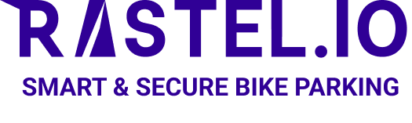

Dacă bicicleta aleasă nu este disponibilă în intervalul dorit, revino aici și alege altă bicicletă.

Hub e-cargobiciclete · BrașovAlege bicicleta dorită și rezervă un interval direct în calendar.
Dacă bicicleta aleasă nu este disponibilă în intervalul dorit, revino aici și alege altă bicicletă.